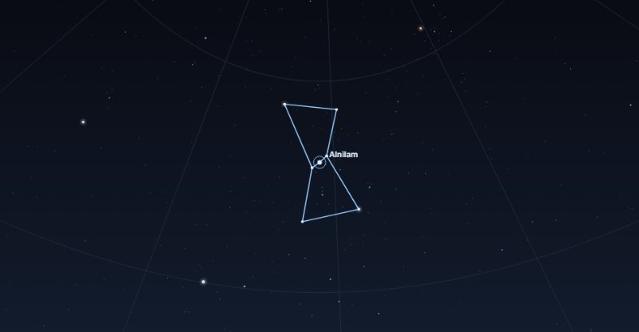

Explore the unknown
AstroNot.
We’re not astronauts. We are AstroNot.
Browser-based research tools for NASA’s SPHEREx infrared survey — no server, no upload, real archive data.
The problem
A new all-sky survey, and a steep path to its data
- SPHEREx maps the whole sky in 102 infrared bands (0.75–5 µm). Every exposure is a 70 MB FITS file; the archive at IRSA already holds hundreds of thousands.
- Working with it means a chain of tools: search the archive, download cutouts, inspect headers, align epochs, measure fluxes, build spectra.
- The official web tools are shared and slow: the IRSA Spectrophotometry Tool took 11 minutes for one star.
- Students and the public have no way in at all.
What we built
A complete astronomy workbench that runs in the browser
scientific tools, from archive search to forced photometry
interactive tools for everyone — constellations, planets, the Moon, meteors
interface languages, Azerbaijani written by hand
Static HTML, CSS and JavaScript. Files are read on your device and never uploaded. Works from a USB stick or any static host.
Principles
Honest tools
Real data only
Every example is a real SPHEREx cutout or a real IRSA table, with its provenance on the page.
Nothing is guessed
Every refusal has a reason. Partial results are reported as partial. Nothing is smoothed or binned without saying so.
Validated
Checked against Astropy, photutils, reproject and the archive’s own outputs — the numbers are in the README.
Private by design
No server, no accounts, no uploads. The only network traffic is to the public archive.
The tools
Thirteen scientific workspaces
Observation
- Observation Search
- Sky Explorer
- Time Machine
- Spectrum Lab
Analysis
- Spectrophotometry
- Forced Spectrophotometry
- Source Detection
- Light Curve Analysis
- Catalog Cross-Match
- Motion Detector
Processing
- FITS Viewer
- Image Differencing
- Mosaic Builder
Each one has a real example, a method note and automated tests. Heavy pixel work runs in Rust compiled to WebAssembly, with a JavaScript fallback.
Workflow
From the archive to your screen
- Observation Search builds the IRSA query for a sky position, date and wavelength range.
- The archive’s CSV is imported; every observation offers a cutout and the full file.
- FITS Viewer checks the header, Time Machine compares two epochs, Image Differencing finds what changed.
- Spectrophotometry and Spectrum Lab turn exposures into a spectrum.

Highlight
The IRSA Spectrophotometry Tool — rebuilt in the browser
IRSA’s web tool for one star (352 exposures)
AstroNot, in a browser tab, same 352 exposures
median flux ratio against IRSA’s own result
We reverse-engineered the archive tool, reimplemented its method in Rust (spxphot) and ported it to JavaScript line by line. The port reproduces the Rust output on every one of 352 exposures to better than 1e-11.
How it works
Only the bytes we need
- The frame list comes from Observation Search (IRSA sends no CORS headers for its query services).
- IRSA’s public S3 copy does allow cross-origin range reads, so the browser reads only about 25 rows of each 70 MB frame, plus the ePSF table once per detector.
- The star’s pixel position comes from the TAN-SIP WCS, matching Astropy to a millionth of an arcsecond.
- The point-spread function is rendered with the same bicubic spline photutils uses.
- A weighted linear least-squares fit of flux + background in a 13-pixel circle — exact in one step.
- Pixel solid angle turns surface brightness into µJy; flags, quality and wavelength come with each point.
For everyone
Constellation Finder: all 88 constellations and your zodiac sign
- 2,579 Yale stars on a local sky for any city, date and time.
- Every constellation is drawn with its official IAU boundary and named in six languages.
- Enter a birth date and see two answers side by side: the astrological sign, and the constellation the Sun was actually in, Ophiuchus included.
- Example: 5 December 2000 → Sagittarius by the calendar, Ophiuchus by the sky.

Technology
Simple on purpose
Front end
Plain HTML, CSS and JavaScript. No framework, no build step. Canvas and SVG for graphics.
Kernels
Rust compiled to WebAssembly for FITS decoding, reprojection, detection and cross-matching; JavaScript fallbacks everywhere.
Testing
389 automated tests, including comparisons with Astropy, photutils and the archive’s outputs; headless browser checks per page.
Delivery
A publish script packages only public files with a signed manifest. Six languages through one runtime catalog.
Validation
Numbers, not adjectives
| What | Compared with | Result |
|---|---|---|
| World coordinates (TAN-SIP) | Astropy WCS | < 1e-6 arcsec |
| Image reprojection | reproject_interp | agrees on real pairs |
| Catalog cross-match | IRSA best-neighbour table | 18 / 18 pairs |
| Forced photometry | IRSA Spectrophotometry Tool | flux ratio 0.9999, flags 100 % |
| Constellation boundaries | IAU lines (13,238 points) | ≤ 0.05° in the zodiac |
| Sun position | USNO equinox instants | < 0.02° |
Team
AstroNot
Project Manager
System Engineer
ML/Data Analyst
Backend Developer
Frontend Developer
Next
What comes next
- Publish the site and share the link.
- Build IRSA-format cutouts straight from the S3 copy, without the archive’s slow cutout service.
- Validate the galaxy (Sérsic) mode of forced photometry against the archive.
- Hand-written translations for the remaining languages.
- More SPHEREx releases as they arrive.
Thank you
Explore the unknown.
Data: NASA/IPAC Infrared Science Archive (IRSA), SPHEREx DR1/QR3. AstroNot is an independent student project and is not affiliated with NASA, IPAC or the SPHEREx team.